library(tidyverse)
library(snakecase)
library(patchwork)The data for this case study are tract-level decennial Census estimates covering 1990-2020. These are geographically harmonized so a given tract is always defined by 2010 geography at the different time periods within this panel.
tract <- read_csv("./data/nhgis0216_ts_geog2010_tract.csv")## Rows: 292228 Columns: 44
## ── Column specification ────────────────────────────────────────────────────────
## Delimiter: ","
## chr (6): GISJOIN, STATE, STATEA, COUNTY, COUNTYA, TRACTA
## dbl (38): GEOGYEAR, DATAYEAR, CW7AA, CW7AAL, CW7AAU, CW7AB, CW7ABL, CW7ABU, ...
##
## ℹ Use `spec()` to retrieve the full column specification for this data.
## ℹ Specify the column types or set `show_col_types = FALSE` to quiet this message.We’ll clean the loaded CSV into a table with more intuitive column labeling.
#do some initial munging
tract <- tract %>%
mutate(tot_nl_w = round(CW7AA),
tot_nl_b = round(CW7AB),
tot_nl_aina = round(CW7AC),
tot_nl_api = round(CW7AD),
tot_nl_oth = round(CW7AE),
tot_nl_mult = round(CW7AF),
tot_lat = round(CW7AG+CW7AH+CW7AI+CW7AJ+CW7AK+CW7AL)) %>%
rename_all(to_snake_case) %>%
select(gisjoin, year = datayear, state:tracta, starts_with("tot")) %>%
filter(year != 1990) %>%
mutate(tot_pop = rowSums(select(., starts_with("tot"))),
shr_nl_w = tot_nl_w/tot_pop,
shr_nl_b = tot_nl_b/tot_pop,
shr_nl_api = tot_nl_api/tot_pop,
shr_nl_oth = (tot_nl_aina+tot_nl_oth+tot_nl_mult)/tot_pop,
shr_lat = tot_lat/tot_pop)
#inspect the result
glimpse(tract)## Rows: 219,171
## Columns: 20
## $ gisjoin <chr> "G0100010020100", "G0100010020200", "G0100010020300", "G01…
## $ year <dbl> 2000, 2000, 2000, 2000, 2000, 2000, 2000, 2000, 2000, 2000…
## $ state <chr> "Alabama", "Alabama", "Alabama", "Alabama", "Alabama", "Al…
## $ statea <chr> "01", "01", "01", "01", "01", "01", "01", "01", "01", "01"…
## $ county <chr> "Autauga County", "Autauga County", "Autauga County", "Aut…
## $ countya <chr> "001", "001", "001", "001", "001", "001", "001", "001", "0…
## $ tracta <chr> "020100", "020200", "020300", "020400", "020500", "020600"…
## $ tot_nl_w <dbl> 1722, 671, 2738, 4273, 5419, 2606, 2518, 1640, 6337, 3821,…
## $ tot_nl_b <dbl> 141, 1163, 491, 117, 355, 549, 281, 213, 1014, 633, 718, 1…
## $ tot_nl_aina <dbl> 15, 6, 7, 10, 25, 12, 23, 3, 42, 18, 19, 6, 53, 41, 30, 24…
## $ tot_nl_api <dbl> 7, 7, 23, 32, 72, 7, 13, 3, 27, 11, 3, 1, 3, 10, 9, 9, 28,…
## $ tot_nl_oth <dbl> 2, 4, 2, 1, 11, 2, 0, 2, 3, 13, 0, 4, 0, 0, 6, 2, 3, 2, 7,…
## $ tot_nl_mult <dbl> 21, 25, 23, 22, 65, 30, 14, 11, 75, 52, 16, 20, 36, 30, 30…
## $ tot_lat <dbl> 12, 16, 55, 101, 95, 66, 51, 14, 80, 81, 21, 18, 41, 30, 6…
## $ tot_pop <dbl> 1920, 1892, 3339, 4556, 6042, 3272, 2900, 1886, 7578, 4629…
## $ shr_nl_w <dbl> 0.8968750, 0.3546512, 0.8200060, 0.9378841, 0.8968884, 0.7…
## $ shr_nl_b <dbl> 0.073437500, 0.614693446, 0.147050015, 0.025680421, 0.0587…
## $ shr_nl_api <dbl> 0.0036458333, 0.0036997886, 0.0068882899, 0.0070237050, 0.…
## $ shr_nl_oth <dbl> 0.019791667, 0.018498943, 0.009583708, 0.007243196, 0.0167…
## $ shr_lat <dbl> 0.006250000, 0.008456660, 0.016471998, 0.022168569, 0.0157…The goal here is to visualize a set of relationships within our data that are relatively complex and multidimensional. This case study does show how to create a specific plot (a transition matrix), but it aims to be more instructive about how we can assemble a plot for which there is not really a starting template, much less a single geometry that accomplishes what we’re interested in.
Transition matrices are a good example of such an complex analysis because they condense the observed change among a set of cases into a format where different trajectories over time are quantified in terms of what percent of cases that started in category A ended in category A, B, C, etc. So while the focus here is in terms of neighborhood compositions, you could certainly imagine other systems where cases are transitioning between a set of different states that could be analyzed through a similar strategy.
The first step here is to define the categories that neighborhoods will be able to transition along over time. The data are long, so we do this once and it is applied in a consistent manner across all periods.
tract <- tract %>%
mutate(race_eth_cat = case_when(
#predominant compositions
shr_nl_w >= .75 ~ "Predominantly White",
shr_nl_b >= .75 ~ "Predominantly Black",
shr_nl_api >= .75 ~ "Predominantly Asian/PI",
shr_lat >= .75 ~ "Predominantly Latinx",
#shared compositions
shr_nl_w < .75 & shr_nl_w >= .50 ~ "White-Mixed",
(shr_nl_b < .75 & shr_nl_b >= .50) |
(shr_lat < .75 & shr_lat >= .50) |
(shr_nl_api < .75 & shr_nl_api >= .50) ~ "Non-White-Mixed",
#the rest
TRUE ~ "Multiethnic"
))Then, since ggplot expects one row : one geometry when using geom_*() functions, we will pivot the data wider so that tracts uniquely identify each row and their time-varying composition is captured through appropriately-labelled columns.
wide_tract <- tract %>%
select(gisjoin, year, race_eth_cat) %>%
pivot_wider(id_cols = gisjoin, names_from = year, names_prefix = "race_eth_",
values_from = race_eth_cat)A reasonable first attempt might be to just start by summarizing and plotting the wide_tract table we just created.
#tally the counts of tracts with particular combinations, then mutate shares of 2010 total
chg_matrix <- wide_tract %>%
group_by(race_eth_2010, race_eth_2020) %>%
tally %>%
mutate(shr = n/sum(n))
#preview what the data structure is
chg_matrix## # A tibble: 38 × 4
## # Groups: race_eth_2010 [7]
## race_eth_2010 race_eth_2020 n shr
## <chr> <chr> <int> <dbl>
## 1 Multiethnic Multiethnic 6837 0.808
## 2 Multiethnic Non-White-Mixed 1329 0.157
## 3 Multiethnic Predominantly Black 5 0.000591
## 4 Multiethnic Predominantly Latinx 10 0.00118
## 5 Multiethnic Predominantly White 8 0.000946
## 6 Multiethnic White-Mixed 270 0.0319
## 7 Non-White-Mixed Multiethnic 942 0.130
## 8 Non-White-Mixed Non-White-Mixed 5667 0.783
## 9 Non-White-Mixed Predominantly Asian/PI 43 0.00594
## 10 Non-White-Mixed Predominantly Black 93 0.0129
## # … with 28 more rowsSo after summarizing wide_tract to chg_matrix, we assign the y aesthetic to 2010 composition categories, the x aesthetic to the 2020 categories and we take a look at the result:
ggplot(chg_matrix, aes(y = race_eth_2010, x = race_eth_2020))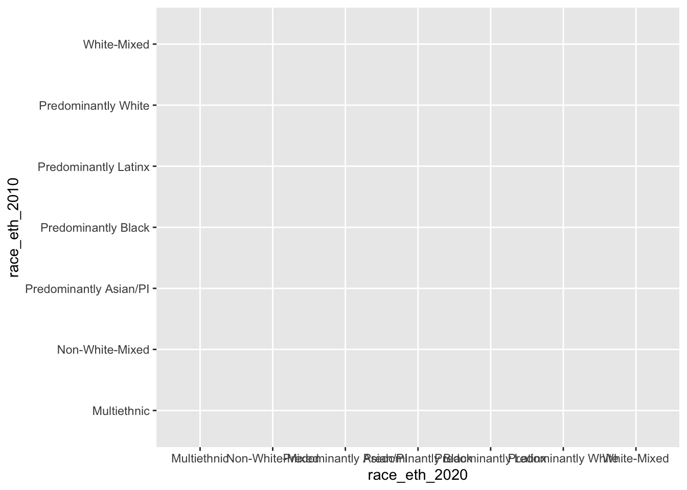
This is on the right track, but now the question is what other geometry and aesthetics to use such that we convey the information about which 2020 categories were most common for tracts with different 2010 categories. There are also things like labels that we’ll want to improve on, but we’ve at least arrived at the structure our data should be in for the target transition matrix visualization.
ggplot(chg_matrix, aes(y = race_eth_2010, x = race_eth_2020, fill = shr)) +
geom_tile()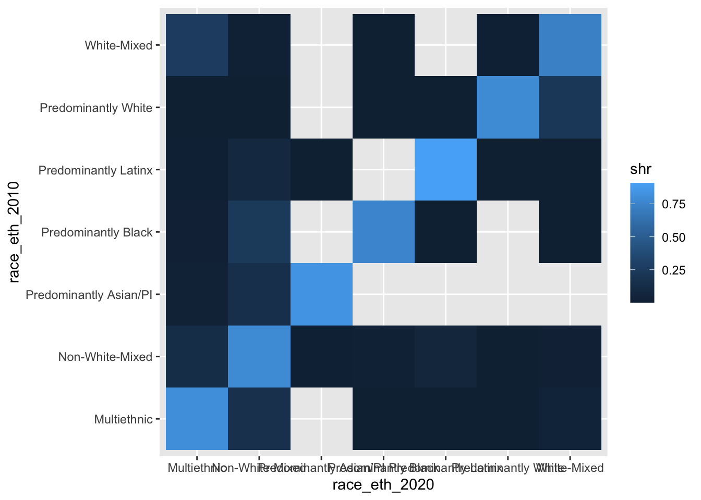
Eeeeeeck! Why are there all those empty tiles? Because the data structure is technically correct, but we have particular X and Y combinations that are not observed (e.g., a 2010 Predominantly Black neighborhood becoming Predominantly White by 2020).
These empty tiles are not structural zeroes (i.e., these trajectories could have happened, but just did not), so our solution will be to use a grid with all possible combinations in tandem with the summary data that we did in fact observe.
We first use expand_grid() to construct the full set of possible 2010 and 2020 composition combinations.
#first, make a grid with all possible combinations
chg_grid <- expand_grid(race_eth_2010 = unique(wide_tract$race_eth_2010),
race_eth_2020 = unique(wide_tract$race_eth_2020))
chg_grid## # A tibble: 49 × 2
## race_eth_2010 race_eth_2020
## <chr> <chr>
## 1 Predominantly White Predominantly White
## 2 Predominantly White Non-White-Mixed
## 3 Predominantly White White-Mixed
## 4 Predominantly White Multiethnic
## 5 Predominantly White Predominantly Black
## 6 Predominantly White Predominantly Latinx
## 7 Predominantly White Predominantly Asian/PI
## 8 Non-White-Mixed Predominantly White
## 9 Non-White-Mixed Non-White-Mixed
## 10 Non-White-Mixed White-Mixed
## # … with 39 more rows#then, do the summary like before but join the grid and set NA values to 0 as appropriate.
chg_matrix <- wide_tract %>%
group_by(race_eth_2010, race_eth_2020) %>%
tally %>%
mutate(shr = n/sum(n)) %>%
right_join(chg_grid) %>%
mutate(n = ifelse(is.na(n), 0, n),
shr = ifelse(is.na(shr), 0, shr)) %>%
mutate(race_eth_2010 = fct_reorder(race_eth_2010, n),
sum = sum(n)) ## Joining, by = c("race_eth_2010", "race_eth_2020")#now try making the basic plot again
ggplot(chg_matrix, aes(y = race_eth_2010, x = race_eth_2020, fill = shr)) +
geom_tile()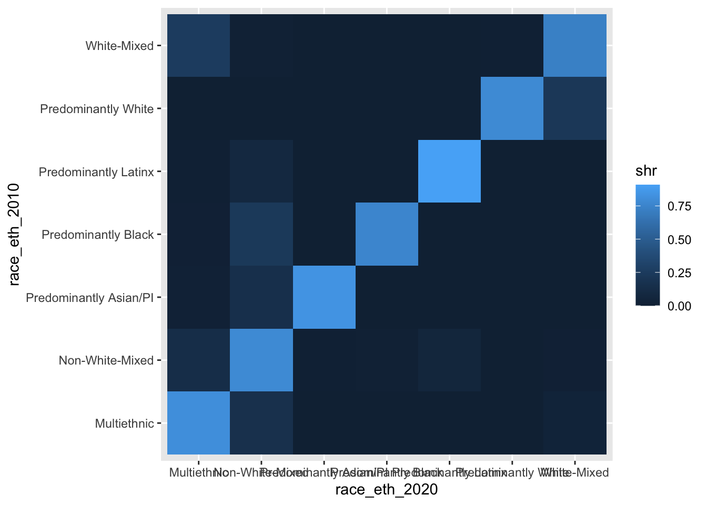
OK, so we now have a complete set of cells for our matrix graphic, but we need to improve on it a lot before it will be a finished product.
Let’s start by first improving the legibility of the stuff that’s already being visualized. We will add coord_equal() since we want each tile to be a square, not the rectangularish shape that the tiles are currently taking. This function is similarly useful in the context of actual vs. predicted graphics where we want one-unit increments to be treated the same within the graphic.
ggplot(chg_matrix, aes(y = race_eth_2010, x = race_eth_2020, fill = shr)) +
coord_equal() +
geom_tile()
Now let’s work on the axis labels since they are really poorly laid out on the x-axis given the labels’ character lengths. We remove the panel.grid (already more or less covered by the tiles) and then we rotate and re-position the x-axis labels so we can read each of them more easily.
ggplot(chg_matrix, aes(y = race_eth_2010, x = race_eth_2020, fill = shr)) +
coord_equal() +
geom_tile() +
theme_bw() +
theme(panel.grid = element_blank(),
axis.text.x = element_text(angle = 45, hjust = 1, vjust = 1)) +
labs(x = "\n2020 Racial/Ethnic Composition",
y = "2010 Racial/Ethnic Composition\n")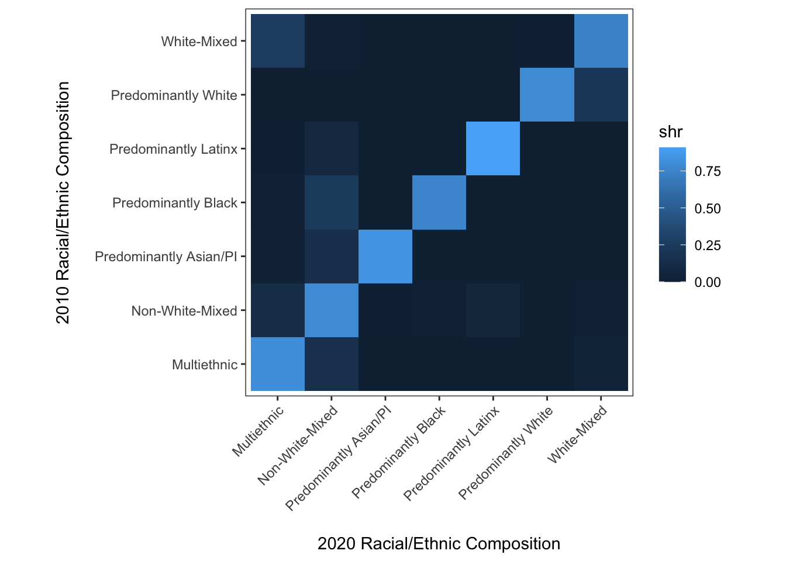
This is better, and we can certainly make out the important takeaway that most neighborhoods have stayed the same composition between 2010 and 2020. But how different are the off-diagonal values? This is a clear case where the continuous fill scale has some limitations for understanding precise differences.
Instead of binning or categorizing values, we will use labels for each cell that simply provide the relevent proportion statistic for a given cell.
ggplot(chg_matrix, aes(y = race_eth_2010, x = race_eth_2020, fill = shr,
label = paste0(round(shr, 2) * 100, "%"))) +
coord_equal() +
geom_tile() +
geom_label() +
theme_bw() +
theme(panel.grid = element_blank(),
axis.text.x = element_text(angle = 45, hjust = 1, vjust = 1)) +
labs(x = "\n2020 Racial/Ethnic Composition",
y = "2010 Racial/Ethnic Composition\n")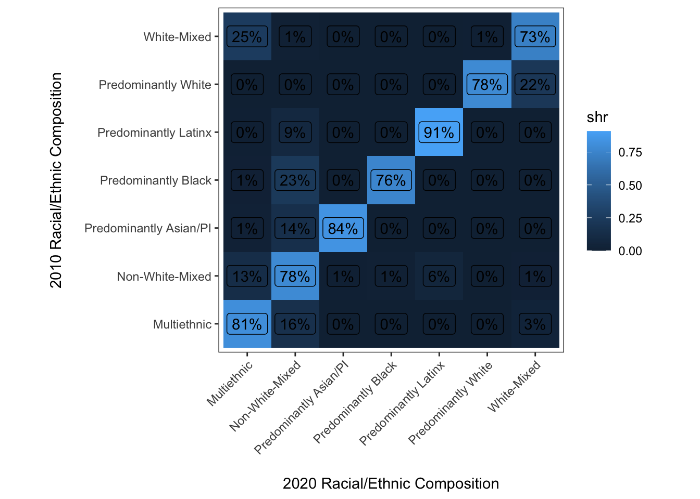
Well, this isn’t quite what we were looking for. The reason is just that geom_label() doesn’t include an opaque background within each label by default. With a little tweaking we can get to where we want to go:
ggplot(chg_matrix,
aes(y = race_eth_2010, x = race_eth_2020, fill = shr,
label = paste0(round(shr, 2) * 100, "%"))) +
coord_equal() +
geom_tile(color = "Black") +
geom_label(color = "Black", fill = "white", size = 3) +
theme_bw() +
theme(panel.grid = element_blank(),
axis.text.x = element_text(angle = 45, hjust = 1, vjust = 1)) +
labs(x = "\n2020 Racial/Ethnic Composition",
y = "2010 Racial/Ethnic Composition\n")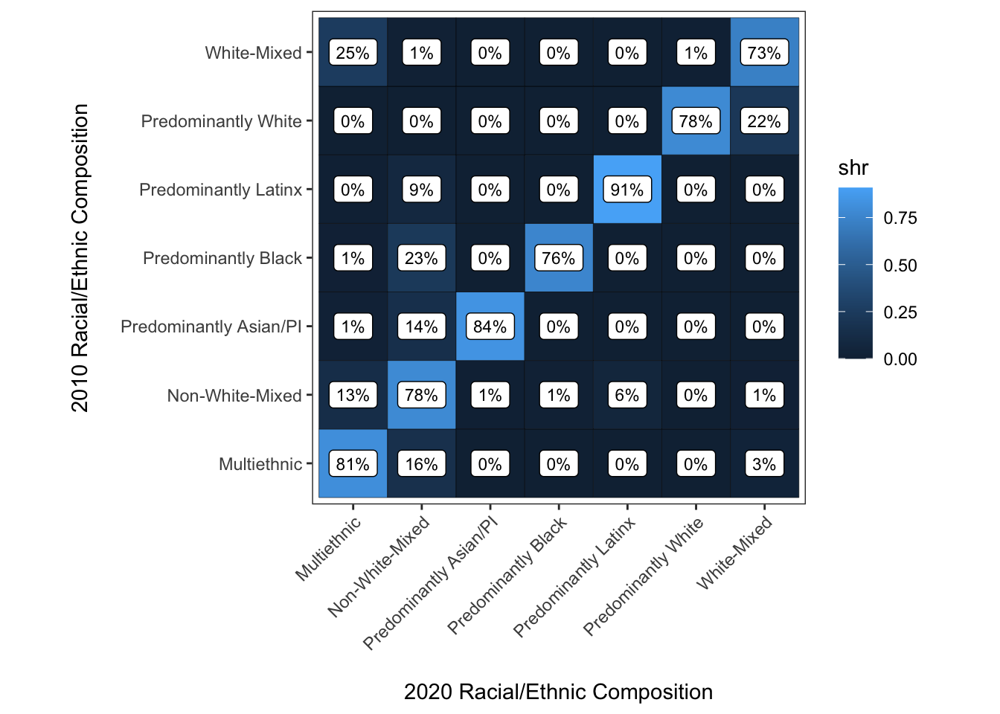
Ok, super close to finished now. Some of the last things we will do are to change the color scale to grayscale so that 0% is white and 100% is black. This will print just fine in B/W, and more importantly leverage how we perceive differences in value (i.e., lightness/darkness of a color) more effectively than the black-to-blue palette that only partially accomplishes this.
ggplot(chg_matrix,
aes(y = race_eth_2010, x = race_eth_2020, fill = shr,
label = paste0(round(shr, 2) * 100, "%"))) +
coord_equal() +
geom_tile(color = "Black") +
geom_label(color = "Black", fill = "white", size = 3) +
scale_fill_gradient(limits = c(0, 1), low = "white", high = "black") +
theme_bw() +
theme(panel.grid = element_blank(),
axis.text.x = element_text(angle = 45, hjust = 1, vjust = 1)) +
guides(fill = "none") +
labs(x = "\n2020 Racial/Ethnic Composition",
y = "2010 Racial/Ethnic Composition\n")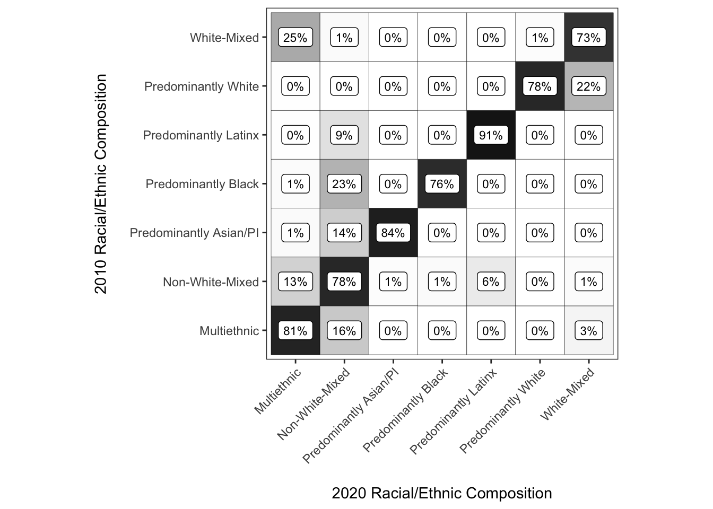
In this case, we want to classify the types from predominant -> mixed -> multiethnic, so we make the racial/ethnic composition categories into factor type columns, and then manually sort the categories to accomplish this task.
relevel() is useful if you only care about setting the first factor level which R treats as the reference group in contexts like regression, whereas fct_reorder() is great if there is a numeric measure to sort the categories along. Unfortunately, those don’t apply neatly in this context so when all else fails, you want to first assign a measure as factor, then draw on the levels of that factor measure when reassigning the measure to have the levels in the order we desire.
#coerce to factor
chg_matrix$race_eth_2010 <- factor(chg_matrix$race_eth_2010)
#inspect starting levels
levels(chg_matrix$race_eth_2010)## [1] "Multiethnic" "Non-White-Mixed" "Predominantly Asian/PI"
## [4] "Predominantly Black" "Predominantly Latinx" "Predominantly White"
## [7] "White-Mixed"#reorder levels
chg_matrix$race_eth_2010 <- factor(chg_matrix$race_eth_2010, levels = rev(levels(chg_matrix$race_eth_2010)[c(6, 4, 5, 3, 7, 2, 1)]))
#inspect reordered levels
levels(chg_matrix$race_eth_2010)## [1] "Multiethnic" "Non-White-Mixed" "White-Mixed"
## [4] "Predominantly Asian/PI" "Predominantly Latinx" "Predominantly Black"
## [7] "Predominantly White"#now do the same to 2020, making the factor levels follow the same order as 2010
chg_matrix$race_eth_2020 <- factor(chg_matrix$race_eth_2020)
chg_matrix$race_eth_2020 <- factor(chg_matrix$race_eth_2020, levels = levels(chg_matrix$race_eth_2010))
#assign the result so we can use it later too
chg_matrix_gg <- ggplot(chg_matrix,
aes(y = race_eth_2010, x = race_eth_2020, fill = shr,
label = paste0(round(shr, 2) * 100, "%"))) +
coord_equal() +
geom_tile(color = "Black") +
geom_label(color = "Black", fill = "white", size = 3) +
scale_fill_gradient(limits = c(0, 1), low = "white", high = "black") +
theme_bw() +
theme(panel.grid = element_blank(),
axis.text.x = element_text(angle = 45, hjust = 1, vjust = 1)) +
guides(fill = "none") +
labs(x = "\n2020 Racial/Ethnic Composition",
y = "2010 Racial/Ethnic Composition\n")
#plot the result
chg_matrix_gg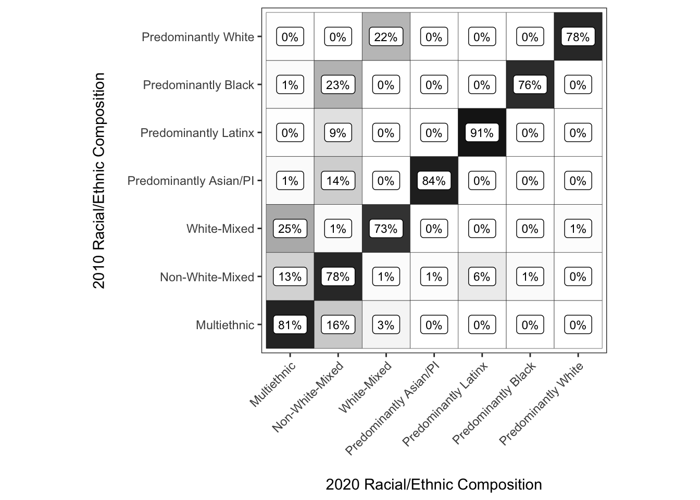
Let’s say we now want to have a figure that has one panel for 2000-2010 transitions and another panel for 2010-2020 transitions.
Normally the best way to create multipaneled visualizations with ggplot() is to generate data that is structured long such that facet_grid() and facet_wrap() will allow plotting the other aesthetics separately by the facetting variable. In this case, since we want the x and y variables to vary by plot, it is easier to create separate plots, assign them to objects and then assemble them with the patchwork library. We could go back and manipulate the data to this end (create a \(t-1\) and \(t\) columns for composition, facet by \(t\) year), but in this case that’d mean we need to retool all of the existing code to some extent (boo). So IMHO, this is a case where patchwork is a great fit since it drops into what we’ve already done in a neat manner.
The patchwork library excels at assembling ggplots that have varying aesethetics across the panels, even if just in a minor sense like the present case. We won’t review all of its functionality since there are great vignettes on the package website, but the gist of it is that you can use +, / and (/) operators to assemble plots together. You could use the same operators provided by patchwork to assemble a bar graph and a line graph (e.g.), so this is the way to assemble plots whenever faceting with built-in ggplot functions does not make sense.
First we’ll use lightly modified code to create a change matrix for the 2000-2010 period.
chg_grid_2010 <- expand_grid(race_eth_2000 = unique(wide_tract$race_eth_2000),
race_eth_2010 = unique(wide_tract$race_eth_2010))
chg_matrix_2010 <- wide_tract %>%
group_by(race_eth_2000, race_eth_2010) %>%
tally %>%
mutate(shr = n/sum(n)) %>%
right_join(chg_grid_2010) %>%
mutate(n = ifelse(is.na(n), 0, n),
shr = ifelse(is.na(shr), 0, shr)) %>%
mutate(race_eth_2000 = fct_reorder(race_eth_2000, n),
sum = sum(n)) ## Joining, by = c("race_eth_2000", "race_eth_2010")chg_matrix_2010$race_eth_2000 <- factor(chg_matrix_2010$race_eth_2000)
chg_matrix_2010$race_eth_2000 <- factor(chg_matrix_2010$race_eth_2000, levels = rev(levels(chg_matrix_2010$race_eth_2000)[c(6, 4, 5, 3, 7, 2, 1)]))
chg_matrix_2010$race_eth_2010 <- factor(chg_matrix_2010$race_eth_2010)
chg_matrix_2010$race_eth_2010 <- factor(chg_matrix_2010$race_eth_2010, levels = levels(chg_matrix_2010$race_eth_2000))
chg_matrix_2010_gg <- ggplot(chg_matrix_2010,
aes(y = race_eth_2000, x = race_eth_2010, fill = shr,
label = paste0(round(shr, 2) * 100, "%"))) +
coord_equal() +
geom_tile(color = "Black") +
geom_label(color = "Black", fill = "white", size = 3) +
scale_fill_gradient(limits = c(0, 1), low = "white", high = "black") +
theme_bw() +
theme(panel.grid = element_blank(),
axis.text.x = element_text(angle = 45, hjust = 1, vjust = 1)) +
guides(fill = "none") +
labs(x = "\n2010 Racial/Ethnic Composition",
y = "2000 Racial/Ethnic Composition\n")
chg_matrix_2010_gg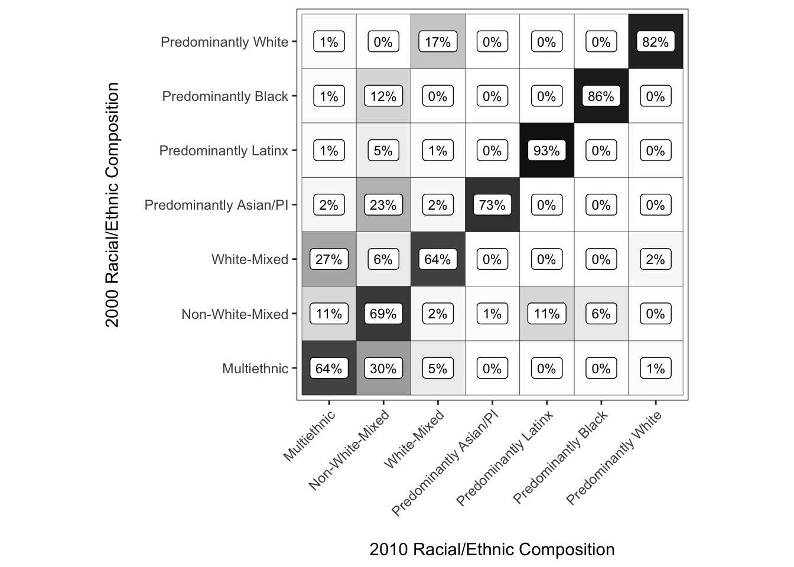
Then it is as simple as “adding”the plots together
chg_matrix_2010_gg + chg_matrix_gg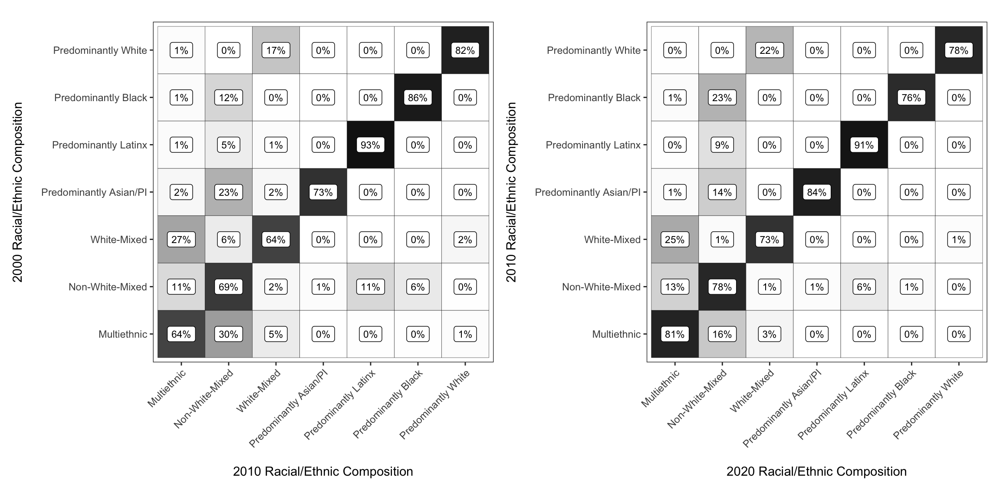
If you pass additional functions to the sum of the plots with &, the ggplot modifications are applied to both subplots. Here we add a bit of padding between the two plots.
chg_matrix_2010_gg + chg_matrix_gg &
theme(plot.margin = unit(c(.2, .2, .2, .2), "in"))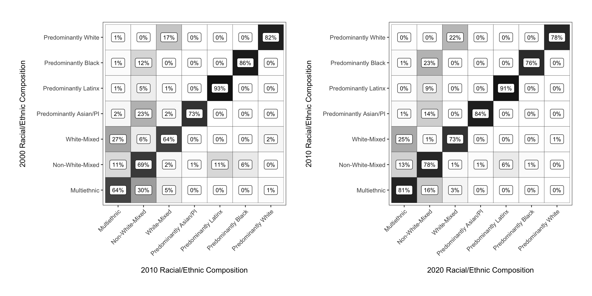
blanden from the markovchain library to generate a transition matrix graphic for integenerational income quartile mobility.The rows represent fathers’ income quartile when the son is aged 16, whilst the columns represent sons’ income quartiles when he is aged 30 (in 2000).
library(markovchain)## Package: markovchain
## Version: 0.8.6
## Date: 2021-05-17
## BugReport: https://github.com/spedygiorgio/markovchain/issuesdata(blanden)
blanden## Bottom 2nd 3rd Top
## Bottom 0.38 0.29 0.22 0.11
## 2nd 0.25 0.28 0.26 0.22
## 3rd 0.21 0.26 0.28 0.24
## Top 0.16 0.17 0.25 0.42#?blanden - use help page for more information
blanden <- as.data.frame(blanden)
glimpse(blanden)## Rows: 16
## Columns: 3
## $ Var1 <fct> Bottom, 2nd, 3rd, Top, Bottom, 2nd, 3rd, Top, Bottom, 2nd, 3rd, T…
## $ Var2 <fct> Bottom, Bottom, Bottom, Bottom, 2nd, 2nd, 2nd, 2nd, 3rd, 3rd, 3rd…
## $ Freq <dbl> 0.38, 0.25, 0.21, 0.16, 0.29, 0.28, 0.26, 0.17, 0.22, 0.26, 0.28,…